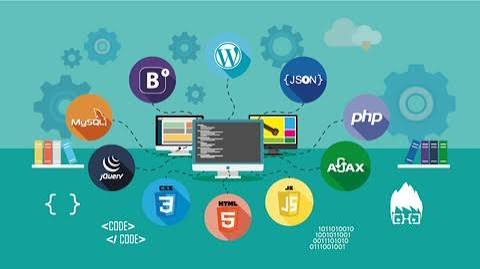
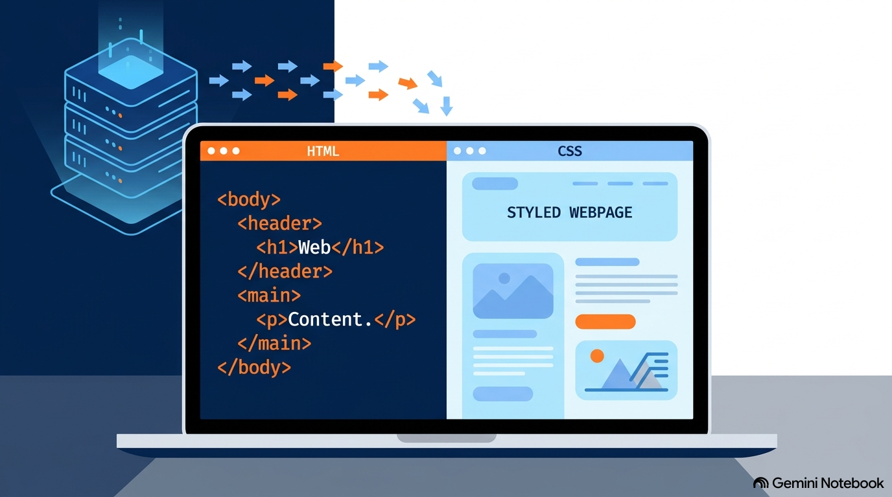

Del ciclo solicitud → respuesta al Box Model:
el mapa mental con la lógica que sostiene la web.
6 ramas
HTML semántico
CSS profesional
SEO + accesibilidad
🗺️ Mapa mental del curso
Un nodo central y seis ramas. La idea que las une: la web es una
conversación entre quien solicita y quien responde.
🌐 Desarrollo Web
1 · Fundamentos de la web
Ciclo solicitud → respuesta
El servidor es el “hotel” de recursos
La URL es la llave maestra
El navegador es el intérprete
HTML se lee línea a línea: no se compila
2 · HTML · la estructura
Lenguaje de marcado, no de programación
<etiqueta> contenido </etiqueta> + atributos
Bloque (div, h1, p) frente a línea (span, a)
Esqueleto: doctype → html → head → body
3 · CSS · la presentación
selector { propiedad: valor; }
Estilo en archivo externo (profesional)
Tipografía: family, weight, line-height
Sobrescribe los estilos por defecto del navegador
4 · Box Model
Cada elemento es una caja de 4 capas
content → padding → border → margin
El margin separa: no es parte de la caja
border-box = control total del tamaño
5 · Entorno de trabajo
VS Code: editor que se vuelve IDE
Prettier · Live Server · Indent Rainbow
Image Preview: valida rutas al instante
Detalle completo en la tabla de abajo
6 · SEO + accesibilidad
Un solo h1: el tema central
Jerarquía sin saltos: h1 → h2 → h3
alt descriptivo: Google lee, no ve
Etiquetas por significado, no por apariencia
📦 El Box Model, en vivo
Este diagrama no es una imagen: está construido con CSS real.
Cada capa usa exactamente la propiedad que representa.
margin
border
padding
content
Aquí viven el texto y las imágenes.
content-box · por defecto
El padding y el borde se suman al ancho declarado:
la caja crece y el diseño se descuadra.
border-box · el paradigma moderno
Padding y borde quedan dentro del tamaño definido:
lo que declaras es lo que mide. La opción profesional.
🛠️ Entorno: VS Code y sus extensiones
La frontera entre un editor y un IDE no está en el programa,
está en las extensiones que le añades.
Las cuatro extensiones que convierten VS Code en un IDE completo
Extensión
Beneficio operativo
Prettier
Formateo automático: código estandarizado y legible.
Live Server
Servidor local con recarga en tiempo real (adiós al F5 manual).
Indent Rainbow
Colorea la indentación: la jerarquía padre-hijo se ve a simple vista.
Image Preview
Miniaturas en el margen: valida rutas de imágenes antes de romperlas.
📈 Reglas de oro: SEO y accesibilidad
Un sitio bonito pero mal estructurado es invisible para Google
e ilegible para un lector de pantalla.
Para el algoritmo
Un único h1: el tema central de la página
Progresión lógica h1 → h2 → h3, sin saltos
alt descriptivo en cada imagen
title y meta description con información real
Para las personas
Etiquetas por significado, no por apariencia
<strong> en lugar de <b>: énfasis semántico
lang="es": el lector de pantalla sabe cómo pronunciar
La estructura es el mapa de las tecnologías de asistencia
“La web opera bajo un principio binario inquebrantable: una entidad
solicita y otra entrega. Comprender este flujo es la diferencia entre
escribir código por inercia y diseñar sistemas con capacidad diagnóstica.”
📸 Recursos visuales del curso
Estas imágenes acompañan las ideas principales del curso para que la
página tenga un hilo visual más claro: estructura, estilo, caja y acceso.

HTML: la estructura que da orden al contenido.CSS: la presentación que le da estilo y personalidad.Box Model: cada elemento se comporta como una caja.SEO y accesibilidad: una web pensada para personas y buscadores.
🎬 El desarrollo web en video
Repasa cómo se relacionan los servidores, HTML y CSS en el flujo
que convierte el código en una página web.
Video explicativo sobre servidores, HTML y CSS.
🖼️ El concepto en una imagen
El flujo completo del front-end: el código HTML estructura el contenido,
el CSS lo estiliza y el servidor lo entrega al navegador.

El servidor entrega los archivos; el navegador los interpreta y
convierte el marcado en la interfaz final.
💡 La imagen ahora se carga desde una ruta local dentro de la carpeta
img para evitar enlaces rotos.
.jpg)
.jpg)